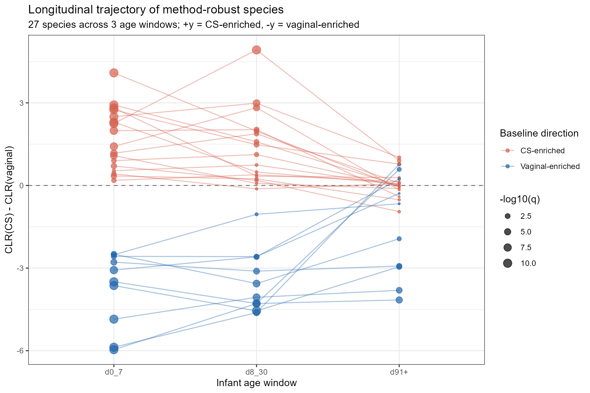

Re-analysing early-life microbiome signals after caesarean birth: robustness, persistence and intervention relevance
A portfolio re-analysis of the Baby Biome Study (Shao et al., Nature 2019)
- Dataset
- Baby Biome Study (Shao 2019, Nature) — 1,470 shotgun metagenomes from 579 UK newborns, longitudinal day 4 to day 428; matched maternal samples available in
family_role. - Domain
- Early-life gut microbiome; caesarean birth; peripartum antibiotic exposure; longitudinal infant sampling.
- Methods
- MetaPhlAn3 / HUMAnN3 profiles; four differential-abundance methods (CLR + Wilcoxon, ALDEx2, ANCOM-BC2, MaAsLin2); random-forest triangulation; longitudinal and 2×2 stratified analysis in R.
- Skills shown
- Reproducible R workflow · metagenomics feature extraction · multi-method robustness · confounder-aware longitudinal analysis · species-to-pathway integration · literature synthesis.
- Output
- A four-filter pipeline that contracts 33 single-method species to 5 method-robust, persistent, CS-driven, vaginal-enriched species — four Bacteroidota and one Actinomycetota — with matching persistent deficits at the functional (pathway) level.
The question
Caesarean-birth infants are the target of a broad intervention landscape — mainstream Bifidobacterium probiotics, vaginal seeding, maternal faecal microbiota transplantation, synbiotic infant formulas, next-generation Bacteroides probiotics. Each rests on published CS-versus-vaginal microbiome differences drawn from cohorts using different methods, time windows, and confounder controls. This project asks a research-analyst question about that evidence base:
What I did
Four filters applied in sequence to the same profile, then repeated at the functional (pathway) level:
- Filter 1 — Method-robust consensus Four DA methods (CLR+Wilcoxon, ALDEx2, ANCOM-BC2, MaAsLin2) run in parallel on the same MetaPhlAn3 profile; retain species significant (FDR < 0.05) in ≥3 of 4. 33 → 27 species.
- Filter 2 — Longitudinal persistence Track CS-versus-vaginal CLR gap across three age windows (d0–7, d8–30, d91+); retain species whose gap persists or widens at three months. 27 → 8 species.
- Filter 3 — Antibiotic vs CS deconvolution 2×2 stratification (birth mode × peripartum antibiotic exposure) at d0–7; retain species where CS effect is comparable to or larger than antibiotic effect. 8 → 6 species.
- Filter 4 — Direction filter Keep vaginal-enriched species (candidates for restore-type intervention); CS-enriched opportunists are handled as a separate question. 6 → 5 species.
The same workflow, applied to 386 MetaCyc pathway abundances (HUMAnN3), contracts 223 method-robust pathways to 7 with substantial persistent magnitude at three months.
Key finding

What this demonstrates
-
Metagenomics analysis on public shotgun data
End-to-end use of MetaPhlAn3 species profiles and HUMAnN3 MetaCyc
pathway profiles via
curatedMetagenomicData, in a research setting where the input is already-processed community abundance rather than raw reads. - Reproducible R workflow A documented pipeline of ordered R scripts producing versioned result tables, figures and a session-info snapshot. Structured so a colleague can rerun any filter stage independently.
- Multi-method robustness testing Applying four DA methods with mechanistically distinct assumptions (compositional-baseline, Monte Carlo, bias-corrected log-linear, GLM with covariates) to the same profile, then acting on their concordance rather than any single output.
- Machine-learning triangulation, not replacement Random forest was used as a data-driven feature-importance ranking to check that species retained by DA concordance also carry predictive signal — that is, agreement between a distribution-free ML importance score and the parametric DA methods is treated as convergent evidence. The classifier is not used as a diagnostic (birth mode is known from the medical record).
- Confounder-aware longitudinal interpretation Identifying that vaginal-born infants in this cohort received higher intrapartum antibiotic prophylaxis (27%) than CS-born (12%), and designing the antibiotic deconvolution to prevent that asymmetry from being read as a CS effect.
- Species-to-function integration Cross-referencing species-level and pathway-level filter outputs to test whether the persistent species deficits correspond to persistent metabolic capacity deficits, and grounding the correspondence in published mechanism (Strandwitz 2019, Buzun et al. 2022, You et al. 2023).
- Honest scope and limitation reporting Explicit documentation of what the cohort cannot answer — outcomes past d91+, feeding-mode interactions, mother–infant strain transmission — with each mapped to a specific extension in future work.
Relevance to early-life and maternal microbiome research
Several elements of this workflow map directly onto the practical needs of an early-life or maternal microbiome research programme:
- Direct methods match. Shotgun metagenomics, R-based reproducible workflow and multi-method differential-abundance analysis are the working stack for infant and maternal microbiome studies.
- Confounder handling matches the field's real problems. Peripartum antibiotic prophylaxis is a persistent confounder in every CS microbiome study; the 2×2 stratification implemented here transfers to intervention trials, feeding studies, and outcome-linked cohorts.
-
Extendable to mother–infant transmission.
BBS metadata already includes matched maternal samples
(
family_role). The same workflow, extended with strain-level analysis (StrainPhlAn, inStrain), would test whether persistent infant deficits reflect failed vertical transmission or failed establishment after transmission — the exact question that motivates maternal-microbiome research programmes. - Structured for outcome linkage. The filtered target sets are small enough to feed directly into outcome-linked cohorts such as those tracking allergy, asthma, growth or neurodevelopment. The pipeline can accept an outcome-carrying cohort as input without re-scaffolding.
- Auditable data-management practices. Ordered scripts, versioned intermediate tables, explicit session-info, figure caption traceability — the kind of documentation that lets a supervisor pick up an analysis six months later or hand it to a PhD student for extension.
Reproducibility
| Data source | Shao et al. 2019, Nature — accessed via the Bioconductor package curatedMetagenomicData (Pasolli et al. 2017, Nat Methods). No raw-read processing required; MetaPhlAn3 species and HUMAnN3 MetaCyc pathway abundances are downloaded already normalised. |
| Environment | R 4.6 with Bioconductor 3.21. Full package versions recorded in results/sessionInfo.txt. |
| Key packages | curatedMetagenomicData, SummarizedExperiment, ALDEx2, ANCOMBC, Maaslin2, vegan, randomForest, ggplot2, patchwork. |
| Runtime | ~45 minutes end-to-end on a laptop (initial curatedMetagenomicData download is the slow step; subsequent runs are cached). |
| Repository | Code, result tables and figures are available in the public GitHub repository. |
| Development workflow | This portfolio was author-directed and AI-assisted. Claude (Anthropic) was used for code drafting, HTML/CSS drafting, exploratory literature lookup and prose editing. The research question, analysis design, filter decisions, result verification and scientific interpretation were performed by the author. Statistical outputs were checked against source data files, and literature claims were checked against primary references before inclusion. |
Scope and limitations
- Not a clinical study. Secondary re-analysis of a public cohort with no outcome data (no NEC, allergy, growth, or neurodevelopmental endpoints). Intervention-relevance claims are hypotheses, not causal evidence.
- Data thin past three months. Beyond d91+ the sample density falls off sharply, so trajectories at 6–12 months cannot be resolved in this cohort.
-
No feeding-mode covariate.
feeding_practiceis 0% non-NA in BBS. Feeding-mode by birth-mode interactions cannot be tested here. - Maternal analysis is a planned extension, not a completed one. Matched maternal samples exist in the metadata but strain-level transmission analysis was out of scope for this pass.
Full scientific report → A more detailed write-up including the four-method DA comparison table, cohort caveats section, all four figures with expanded captions, and a full glossary and references list is available at the full report page.
curatedMetagenomicData
maintainers who provide standardised profiles, and the methodology teams
behind MetaPhlAn3 / HUMAnN3, ALDEx2, ANCOM-BC2 and MaAsLin2. No
re-identifiable participant data are included.